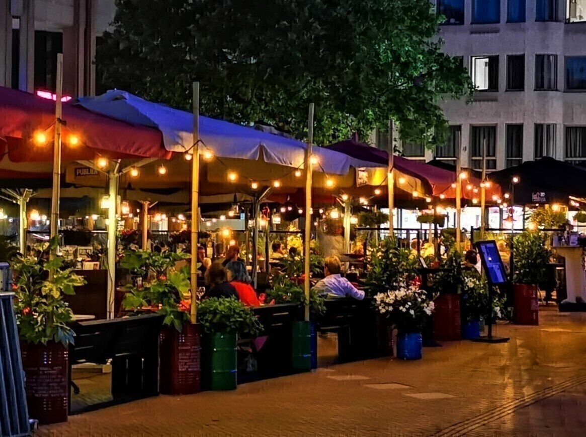
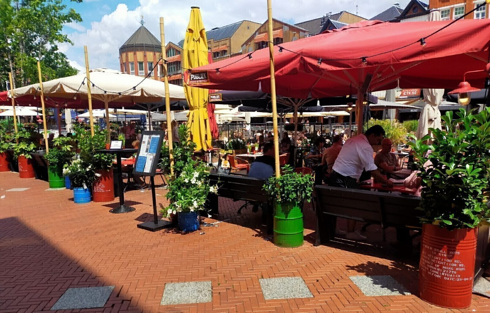
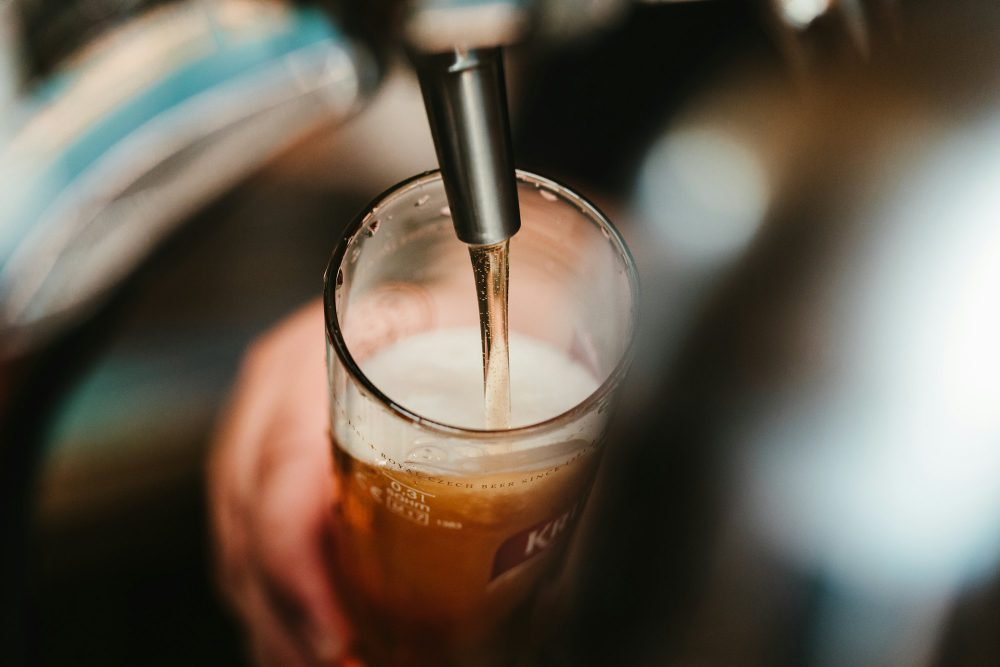
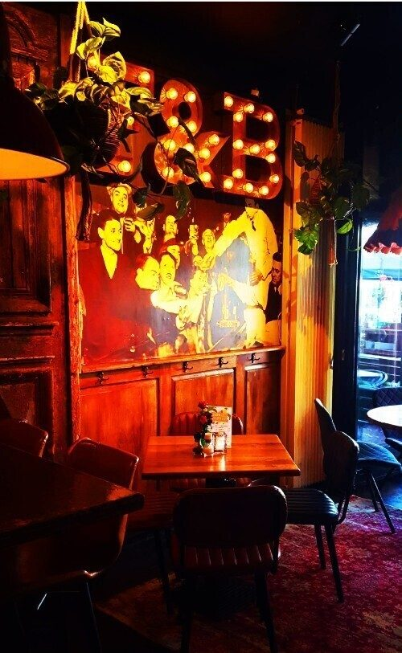
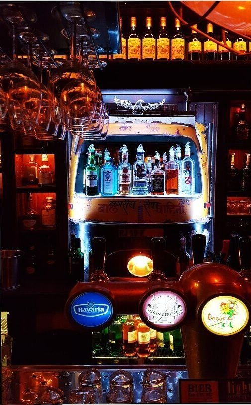
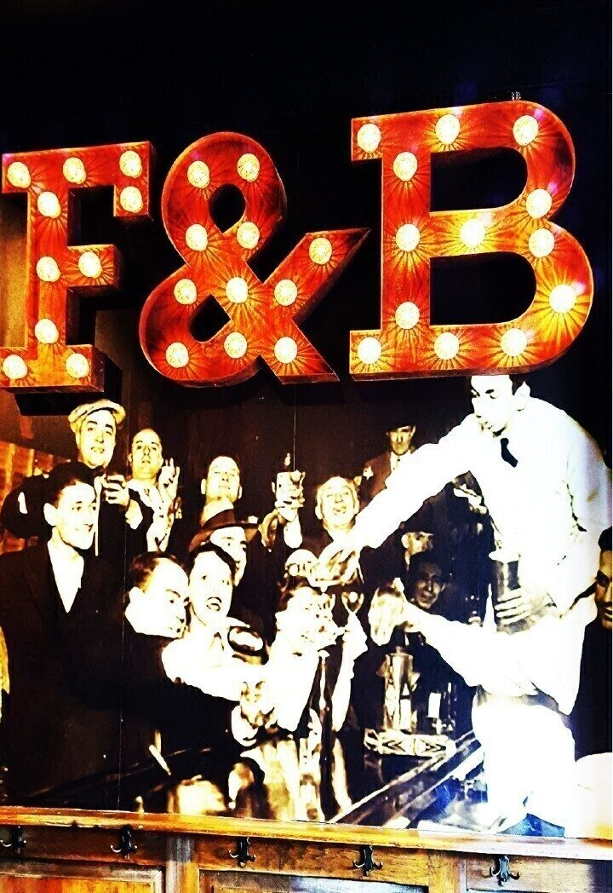

Het meest gevarieerde café op de Markt in Eindhoven
Ontbijt, lunch of diner, een borrel aan de bar of een speciaalbier op ons terras. Brabantse gastvrijheid, elke dag vanaf 10.00 uur.
Aan de bar, aan een tafeltje of op ons terras
De Brabantse gastvrijheid en gezelligheid, daar staan wij voor. Ontbijt, lunch of diner, het kan bij ons allemaal. Zin in een borrel, je bent van harte welkom. Aan de bar, samen aan een tafeltje of op ons fijne terras.
Hieronder vind je onze menukaart, foto’s en meer informatie. Of beter nog, loop gezellig even binnen!

Menukaart
Van de eerste koffie tot de laatste cocktail. Met V gemarkeerde gerechten zijn vegetarisch of vegetarisch te bestellen; staat er een prijs achter, dan is dat de prijs van de vegetarische variant.
Allergieën of dieetwensen? Wij hebben een aparte allergenenkaart met de allergenen per gerecht. Geef het gerust aan bij je bestelling.

Bieren & burgers
Bij Publiek zit je goed als liefhebber van speciaalbier.
50+soorten speciaalbier op fles
8speciaalbieren van de tap
Seizoensgebonden bier, alle klassiekers en natuurlijk echte Eindhovense bieren. En daarbij hoort een goede burger: de Publiekburger, de Crunchy chicken burger of de vegetarische Crispy nacho burger.
Speciaalbier specials
Binnen bij Publiek
Lichtletters, oude reclameposters, donker hout en een bar vol tapkranen. Voor als het terras even niet lukt, of gewoon omdat het binnen gezellig is.



Reserveren & contact
Reserveren voor het terras
In het weekend (vrijdag t/m zondag) nemen wij vanwege de drukte geen reserveringen aan voor het terras. Reserveren is dan alleen mogelijk binnen. Is er bij aankomst plaats op het terras? Dan kijken we graag of je alsnog op het terras kunt zitten.
Openingstijden
| Maandag | 10.00 – 00.00 |
|---|---|
| Dinsdag | 10.00 – 00.00 |
| Woensdag | 10.00 – 00.00 |
| Donderdag | 10.00 – 00.00 |
| Vrijdag | 10.00 – 02.00 |
| Zaterdag | 10.00 – 02.00 |
| Zondag | 10.00 – 00.00 |
Veelgestelde vragen
Wat is Publiek Food & Drinks in Eindhoven?
Publiek Food & Drinks is een café en restaurant op de Markt in het centrum van Eindhoven. Je kunt er terecht voor ontbijt, lunch, diner, een borrel, speciaalbier en cocktails.
Waar ligt Publiek Food & Drinks?
Publiek Food & Drinks ligt aan Markt 20, 5611 EC Eindhoven, midden in het centrum van Eindhoven.
Is Publiek Food & Drinks een café of restaurant?
Publiek is zowel een café als restaurant. Je kunt er de hele dag terecht voor eten en drinken, van ontbijt en lunch tot diner en borrel.
Kun je bij Publiek ontbijten?
Ja. Publiek serveert ontbijtgerechten, waaronder een Breakfast Special met gebakken ei, bacon of gerookte zalm, een croissant met jam en yoghurt met granola.
Kun je bij Publiek lunchen?
Ja. Op de lunchkaart staan onder andere een clubsandwich, uitsmijter, Brabantse kroketten, verschillende belegde broodjes, tosti’s, salades en burgers.
Kun je bij Publiek dineren?
Ja. Publiek heeft een uitgebreide dinerkaart met kleine gerechten, hoofdgerechten, salades, hamburgers en desserts. De keuken is internationaal georiënteerd en werkt met verse seizoensgebonden producten.
Wat voor keuken heeft Publiek Food & Drinks?
Publiek heeft een internationaal georiënteerde keuken. Op de kaart staan gerechten uit verschillende keukens, zoals teriyaki chicken, yakitori, gyoza, albondigas, saté, curry, fish & chips en Italiaanse en Amerikaanse invloeden.
Heeft Publiek Food & Drinks hamburgers?
Ja. Publiek serveert verschillende hamburgers, waaronder de Publiekburger, Crunchy Chicken Burger en Crispy Nacho Burger.
Heeft Publiek een vegetarische burger?
Ja. De Crispy Nacho Burger is vegetarisch en wordt geserveerd met tomaat, salsa, guacamole, nachochips en frites.
Heeft Publiek vegetarische gerechten?
Ja. Op de kaart staan verschillende vegetarische gerechten en diverse gerechten kunnen vegetarisch worden bereid. Voorbeelden zijn gyoza, camembert uit de oven, geitenkaassalade, de vegetarische curry en de vegetarische burger.
Kan ik bij Publiek terecht met dieetwensen of allergieën?
Ja. Publiek heeft een aparte allergenenkaart waarop de allergenen per gerecht worden vermeld. Bij specifieke allergieën of dieetwensen is het verstandig dit bij de bestelling aan te geven.
Heeft Publiek Food & Drinks een terras?
Ja. Publiek heeft een terras op de Markt in Eindhoven. Je kunt er terecht voor eten, drinken, koffie, een borrel of een speciaalbier.
Kan ik een tafel op het terras van Publiek reserveren?
In het weekend, van vrijdag tot en met zondag, worden vanwege de drukte geen reserveringen voor het terras aangenomen. Reserveren kan dan alleen binnen. Als er bij aankomst plaats is op het terras, kan worden gekeken of je daar alsnog kunt zitten.
Kan ik bij Publiek een tafel reserveren?
Ja. Publiek biedt de mogelijkheid om binnen een tafel te reserveren. Voor het terras gelden in het weekend afwijkende reserveringsregels.
Kan ik bij Publiek terecht voor een borrel?
Ja. Publiek is ook een café en is geschikt voor een borrel. Je kunt aan de bar, aan een tafel of op het terras terecht voor drankjes en borrelhapjes.
Welke borrelhapjes heeft Publiek?
Op de kaart staan onder andere een tapasplank, borrelplankje, nacho’s, loaded fries, bittergarnituur, gyoza, bruschetta’s, gamba’s en camembert uit de oven.
Heeft Publiek een tapasplank?
Ja. De tapasplank bestaat onder andere uit garnaaltjes, kipspiesjes, albondigas, fritto misto, Spaanse ham, Manchego, kaas, olijven en brood.
Heeft Publiek een borrelplank?
Ja. Het borrelplankje bestaat onder andere uit bitterballen, cauliflower bites, oude kaas, Spaanse ham, nacho’s met guacamole, pinda’s en olijven.
Heeft Publiek Food & Drinks veel speciaalbier?
Ja. Publiek heeft ruim vijftig soorten speciaalbier op fles en acht speciaalbieren van de tap. Het aanbod bestaat uit seizoensbieren, klassiekers en bieren van Eindhovense brouwerijen.
Heeft Publiek Eindhovense bieren?
Ja. Naast bekende klassiekers en seizoensbieren heeft Publiek ook echte Eindhovense bieren in het assortiment.
Kan ik bij Publiek een speciaalbier van de tap drinken?
Ja. Publiek heeft acht speciaalbieren van de tap. Het assortiment wisselt en bevat naast klassiekers ook seizoensgebonden bieren.
Heeft Publiek cocktails?
Ja. Publiek heeft een cocktailkaart met onder andere Limoncello Spritz, Blood Orange Spritz en verschillende Gin Tonics.
Heeft Publiek alcoholvrije dranken?
Ja. Publiek heeft verschillende alcoholvrije opties. Op de kaart staan onder andere alcoholvrije gin-tonic en alcoholvrije bieropties.
Heeft Publiek Food & Drinks wijn?
Ja. Publiek heeft een wijnkaart met witte, rosé- en rode wijnen uit verschillende landen en wijnregio’s, waaronder Frankrijk, Nieuw-Zeeland, Italië, Spanje en Duitsland.
Kan ik bij Publiek koffie drinken?
Ja. Omdat Publiek vanaf de ochtend geopend is en ook ontbijt serveert, kun je er terecht voor koffie en andere warme en koude dranken.
Is Publiek geschikt voor een lunchafspraak?
Ja. Met de ruime keuze aan lunchgerechten, broodjes, salades en burgers is Publiek geschikt voor een informele lunchafspraak in het centrum van Eindhoven.
Is Publiek geschikt voor een diner met vrienden?
Ja. De internationale kaart, verschillende kleine gerechten, burgers, hoofdgerechten en ruime keuze aan drankjes maken Publiek geschikt voor een diner met vrienden.
Is Publiek geschikt voor een borrel met vrienden?
Ja. Publiek is juist ook gericht op borrelen en heeft verschillende borrelplanken, tapas, nacho’s, loaded fries en andere kleine gerechten om te delen.
Is Publiek geschikt voor groepen?
Publiek is geschikt voor verschillende soorten gezelschappen. Voor grotere groepen of specifieke wensen is het verstandig vooraf contact op te nemen met het café.
Is Publiek geschikt voor gezinnen?
Ja. De gevarieerde kaart met onder andere burgers, frites, pasta-achtige gerechten, kipgerechten en desserts maakt Publiek geschikt voor verschillende leeftijden en eetvoorkeuren.
Waar ligt Publiek ten opzichte van het centrum van Eindhoven?
Publiek ligt direct op de Markt, een van de centrale pleinen van Eindhoven. Vanuit het café zijn de belangrijkste winkelstraten en andere delen van het centrum gemakkelijk te voet bereikbaar.
Is Publiek ook ’s avonds geopend?
Ja. Publiek is iedere dag geopend tot middernacht of later. Op vrijdag en zaterdag is het café geopend tot 02.00 uur.
Wat zijn de openingstijden van Publiek Food & Drinks?
Publiek is geopend van maandag tot en met donderdag van 10.00 tot 00.00 uur, op vrijdag en zaterdag van 10.00 tot 02.00 uur en op zondag van 10.00 tot 00.00 uur.
Is Publiek Food & Drinks op zondag geopend?
Ja. Publiek is op zondag geopend van 10.00 tot 00.00 uur.
Hoe kan ik contact opnemen met Publiek Food & Drinks?
Publiek Food & Drinks is gevestigd aan Markt 20, 5611 EC Eindhoven. Je kunt het café telefonisch bereiken via 040 - 236 6001 of per e-mail via info@publiekfooddrinks.nl.